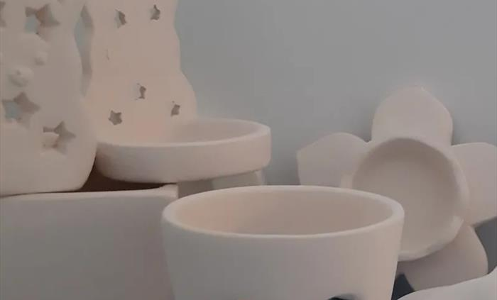
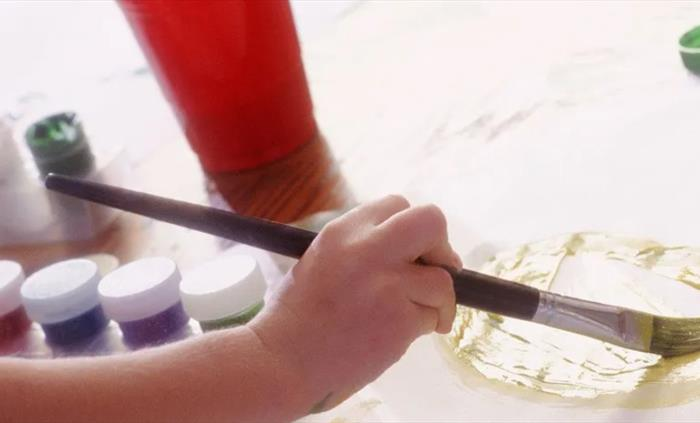

Creative time for younger visitors.
Tourism copy frames the shop around children adding personal touches to gifts bought in-store.
66 Middle Street · Brixham harbour town
A small independent Brixham stop for tea, coffee, cakes, snacks, gift browsing, and hands-on craft ideas for families.
The idea
Public tourism copy describes Crafty Cwtch as a coffee shop, craft shop, and gift shop in one. The old site introduces Janet and Dave's 2019 shop opening and the idea of giving children a space to explore their creative side while adults enjoy coffee and snacks.
Craft and gifts
The strongest sales hook is the mix: coffee for the adults, colour and craft for children, and small gifts that feel more personal than a standard seaside souvenir.
Tourism copy frames the shop around children adding personal touches to gifts bought in-store.

GiftsGift browsing becomes part of the visit, with a craft-led story behind what goes on the shelves.

TableThe page should show how the craft side works before visitors reach the door.
Tea, coffee, cakes
Public listings mention fabulous teas, coffees, Welsh cakes, and yummy things. The demo keeps the offer compact because menus and opening hours should be confirmed by the business before commercial use.
Visit
English Riviera and FHRS records place Crafty Cwtch at 66 Middle Street, Brixham TQ5 8EJ. The map below is draggable and zoomable for checking the surrounding streets before visiting.
Why the site matters
The old website has useful history and identity, while tourism and hygiene listings carry the current address and public trust signals. This rebuild turns that scattered information into a visitor discovery page that can be sold as a practical 1000 USD upgrade.